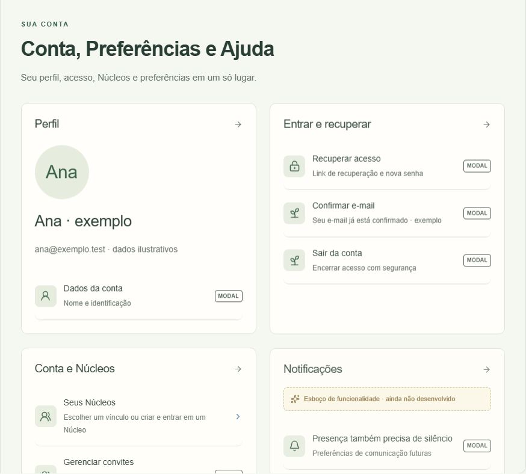
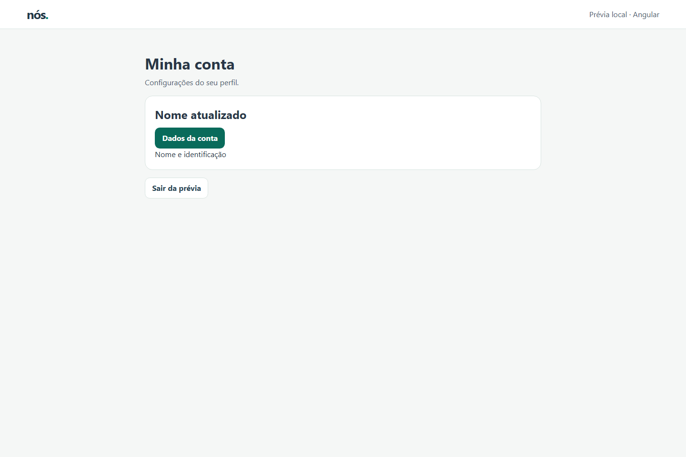
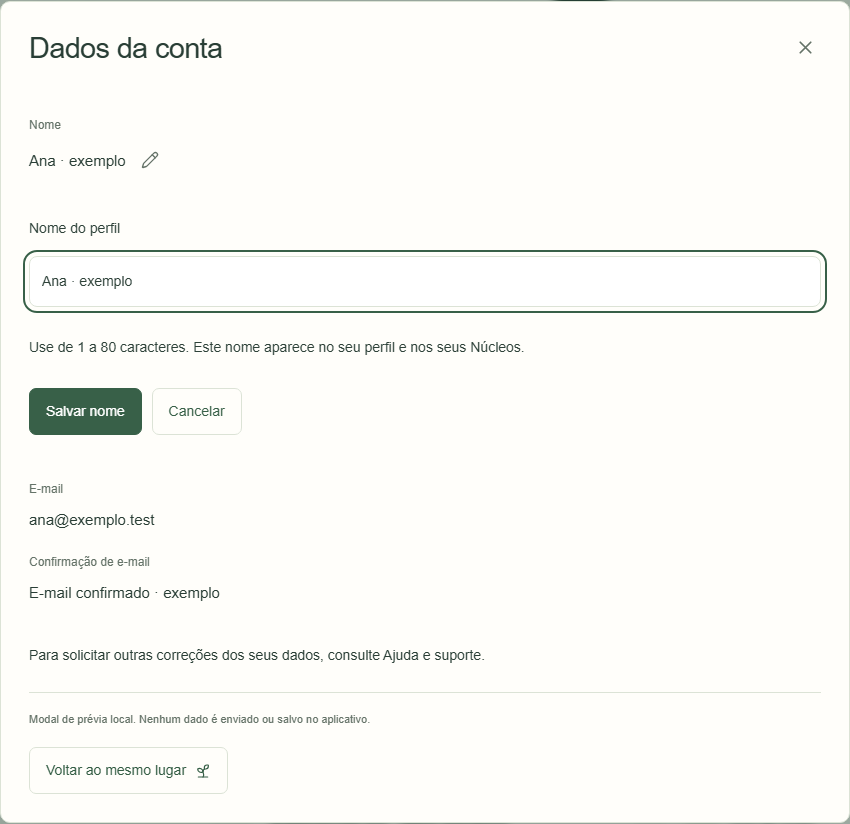
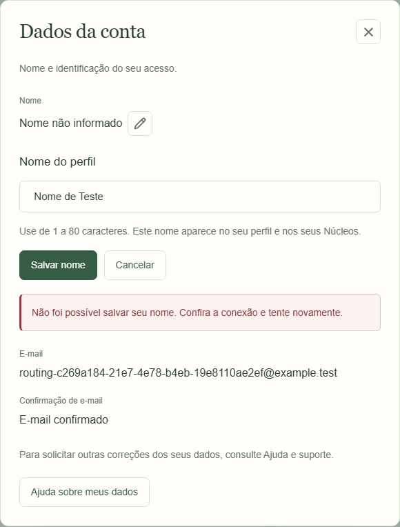
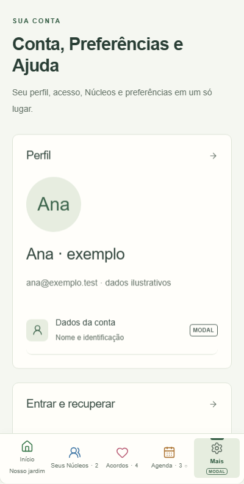
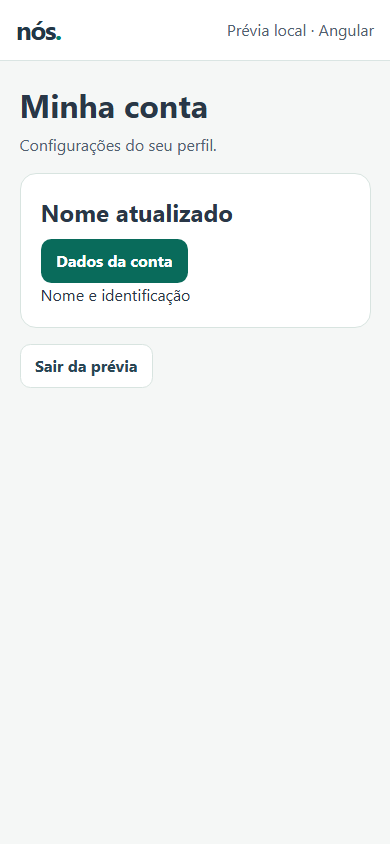
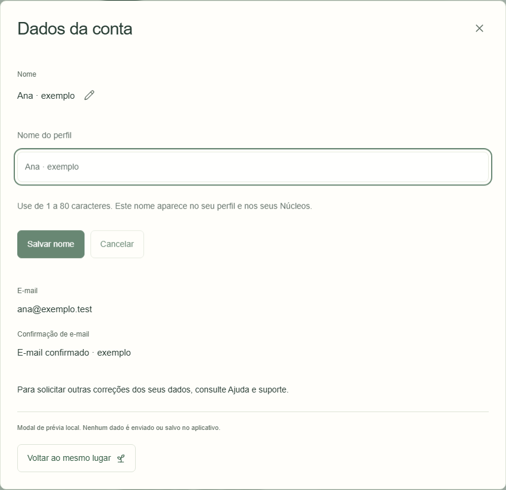
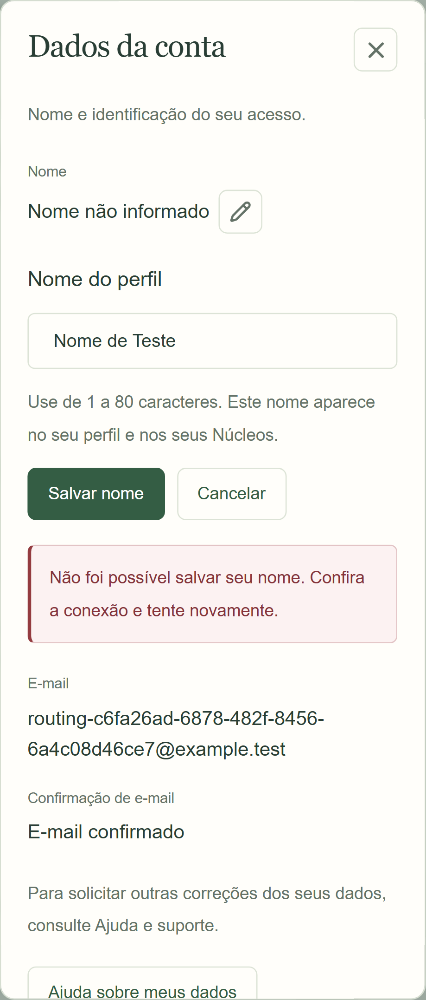
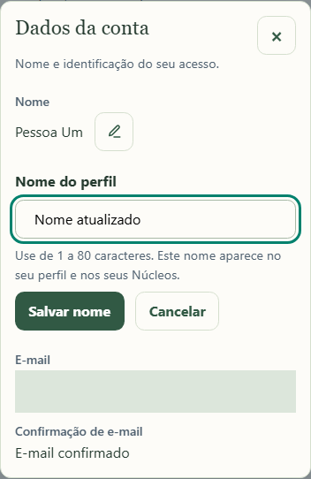

v4.0.0-alpha.1 · 15/11/2026 · Rota Angular: /configuracoes/conta
Referências: Conta no Next.js e Tela 66 no Atlas vivo. O Atlas conserva a composição completa da linha Next.js e documenta o recorte na guia Migração. Não existia uma composição Angular anterior.
Dados da conta: o botão de mesmo nome abre o modal com sessão ativa. O lápis inicia edição; Salvar nome confirma após o Supabase responder; Cancelar, X, Escape e gesto externo antes do envio descartam o rascunho. O Atlas usa dados ilustrativos; os aplicativos usam contas locais temporárias. O e-mail da prévia está coberto na imagem.
Ambiente: Chromium desktop e emulação móvel, 1440 e 390 pixels na aplicação; o Atlas usa seus modos Desktop e Mobile. O layout completo, navegação, opções de ajuda e demais preferências ainda não fazem parte da prévia. Desktop e celular foram verificados com o Supabase local.
Guia Migração do Atlas · Registro A01








